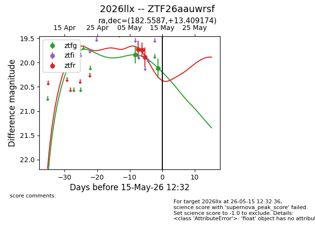
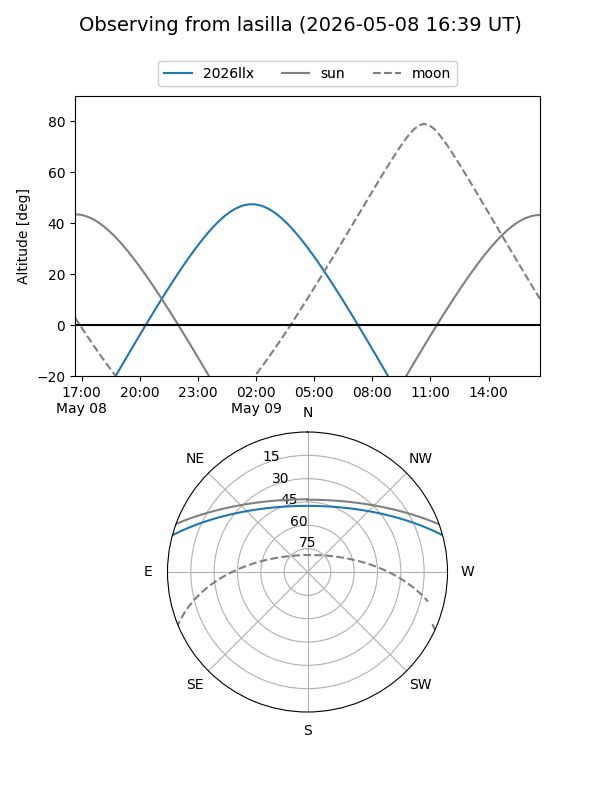
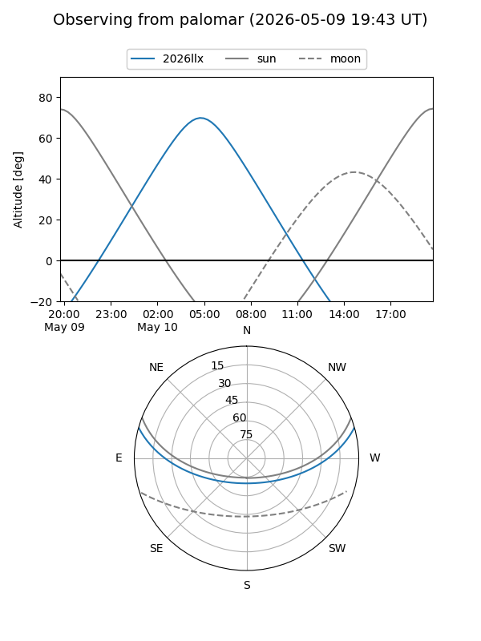
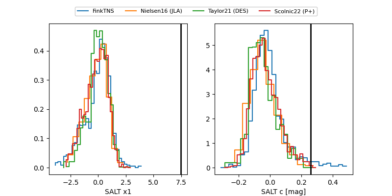

2026llx
Target 2026llx at 2026-05-15 12:34
Aliases and brokers:
FINK: link
Lasair: link
ALeRCE: link
TNS: link
YSE: link
alt names
ZTF26aauwrsf (ztf,fink_ztf)
2026llx (tns,yse)
Coordinates:
equatorial (ra, dec) = 182.5587,+13.40917
equatorial (HMS+DMS) = 12:10:14.09,+13:24:33.03
galactic (l, b) = (265.8345,+73.23919)
Flags:
Photometry:
last ztfg=20.11, ztfr=19.89
2 ztfg, 3 ztfr detections
Lightcurve

Visibility


Additional plots
